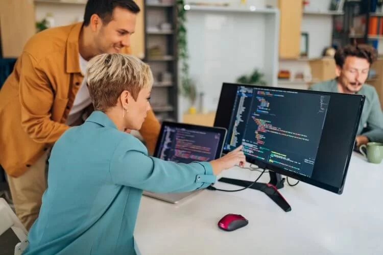
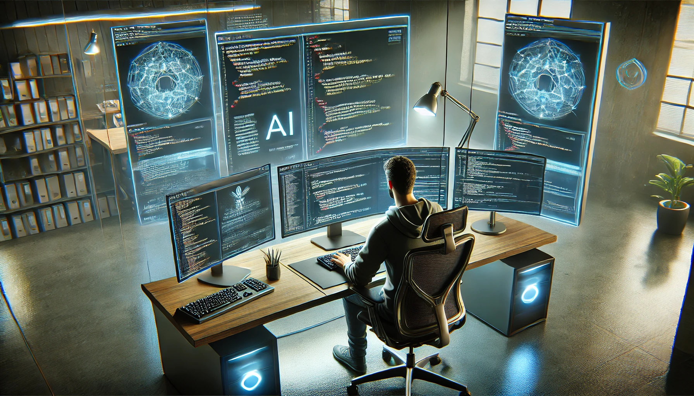

O Programador e a IA: Uma Parceria para o Futuro do Código
A inteligência artificial (IA) está redefinindo o papel dos programadores, não como uma ameaça, mas como uma ferramenta poderosa que otimiza o fluxo de trabalho e acelera o desenvolvimento de software. Longe de serem substituídos, os profissionais de programação estão sendo convidados a uma nova era de colaboração, onde a IA cuida do trabalho repetitivo e o cérebro humano foca no que realmente importa: a criatividade, a resolução de problemas complexos e a arquitetura de sistemas.
___________________________________________________


Como a IA Está Transformando o Dia a Dia da Programação
Hoje, a IA já é uma aliada constante para quem trabalha com código, atuando em diversas etapas do desenvolvimento.
- Automação da Geração de Código: Ferramentas de IA como o GitHub Copilot e o Amazon CodeWhisperer podem completar linhas de código ou até mesmo funções inteiras com base em comentários ou no contexto do código existente. Isso acelera a escrita e reduz a chance de erros de digitação, permitindo que o programador se concentre na lógica do programa.
- Debug e Otimização: A IA pode analisar código, identificar bugs (erros) e sugerir correções de forma muito mais rápida que um ser humano. Além disso, ela pode otimizar o código para que ele rode de forma mais eficiente, economizando tempo e recursos computacionais.
- Documentação e Tradução: A IA pode gerar documentação técnica para o código, uma tarefa que muitos programadores consideram cansativa. Ela também pode traduzir código entre diferentes linguagens de programação, facilitando a migração de projetos e a interoperabilidade.
- Criação de Protótipos e Interfaces: Ferramentas de IA podem transformar descrições de texto em código HTML, CSS e JavaScript, agilizando a criação de protótipos e interfaces de usuário (UI) para websites e aplicativos.
Desafios e o Papel Essencial do Programador
Apesar das inovações, a IA na programação traz desafios e reforça a importância das habilidades humanas.
- Qualidade e Segurança do Código: O código gerado por IA nem sempre é perfeito. Ele pode ter bugs, ser ineficiente ou até mesmo conter vulnerabilidades de segurança. A responsabilidade de revisar, testar e garantir a qualidade do código ainda é do programador.
- Solução de Problemas Complexos: A IA é ótima para tarefas repetitivas e bem definidas, mas não tem a capacidade de raciocínio criativo para resolver problemas de arquitetura complexos ou projetar sistemas inovadores do zero. A habilidade de pensar "fora da caixa" e de entender o contexto do problema permanece exclusivamente humana.
- Entendimento e Contexto do Projeto: Uma IA não compreende o objetivo final de um projeto, as necessidades do cliente ou as restrições de negócio. O programador atua como a ponte entre a tecnologia e o problema real a ser resolvido.
O Futuro da Profissão
O futuro do programador não é ser um digitador de código, mas sim um arquiteto e engenheiro de soluções. O profissional do amanhã usará a IA como um assistente superpoderoso, liberando sua mente para tarefas de alto nível, como:
- Projetar sistemas inteiros: Definir a estrutura e a lógica de como diferentes partes de um software interagem.
- Lidar com requisitos de negócio: Traduzir as necessidades dos clientes em soluções técnicas.
- Inovação: Criar novas tecnologias e abordagens que ainda não existem.
Em resumo, a IA automatiza o "como", enquanto o programador se dedica ao "o quê" e ao "porquê". A programação se tornará uma profissão mais estratégica e criativa, onde o domínio da lógica e a capacidade de resolver problemas serão mais valiosos do que nunca. A colaboração entre a inteligência humana e a artificial é o que vai impulsionar a próxima grande revolução tecnológica.